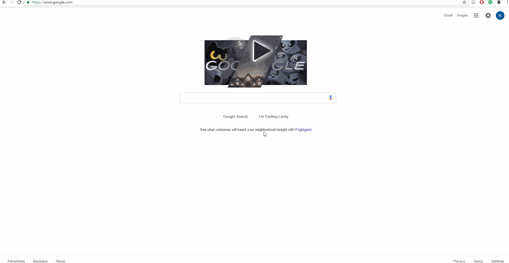

This extension is designed to make life easier for reporters. Here's what it does:
Finding stories your competitors have written can be a pain without access to their archives. The extension stores up to five competitor sites for you, letting you run a custom Google search just on those sites at any time.
To use the site search feature, click on the extension icon in the top-right corner of your browser, then click "Options." Add in your sites, then click save. To search, click on the extension icon, put your search term(s) in the text field and hit enter.
The extension remembers the sites you choose, so you only have to set them once. You can change the competitor sites you want to search at any time.
I can't even begin to count the number of times I opened up thesaurus.com when I worked as a reporter. With this extension, you don't have to. Enter your search term and click "Definitions" or "Synonyms." That's it.
This extension binds a few new keyboard shortcuts to Chrome. Press Alt+T to open Twitter, Alt+B for Facebook and Alt+G for Gmail in new tabs.
Reporters are the most important people on the planet, and I hope this extension makes your life a little easier. If you run into any bugs, please email me so I can fix them. You can also make a small donation if you're so inclined. I'll never do a pledge drive.
-Kia Farhang